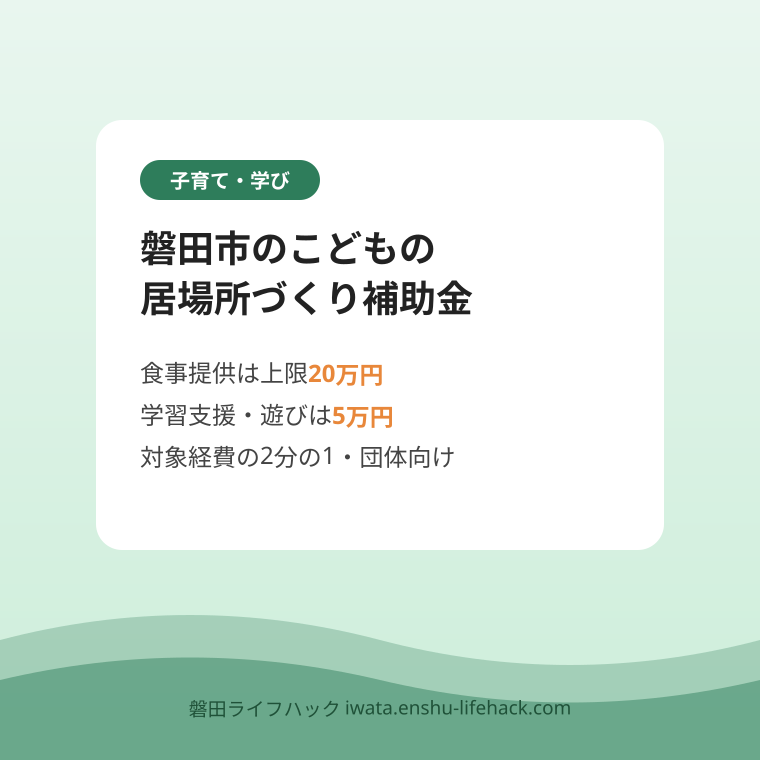

子育て・学び
磐田市のこどもの居場所づくり補助金｜食事提供は上限20万円・学習支援と遊びは5万円、対象経費の2分の1を民間団体に助成

この記事の要点
Q. 磐田市のこどもの居場所づくり補助金は、誰が・いくら受けられますか？
A. 市内でこどもの居場所を新規に立ち上げる、または拡充する民間団体（法人格不問）が対象。食事提供は上限20万円、学習支援と遊び・見守り等は上限5万円で、補助額は対象経費の実支出額と基準額の少ない方の2分の1。申請は1団体1回限りで、窓口はこども未来課（iプラザ、電話0538-37-2808）。
「うちの地区にも、子どもが放課後に安心して寄れる場所があったら」。こども食堂や無料の学習支援、地域の見守りの場は、始める人の善意だけでは続きません。会場の改修や食器・教材の準備には、どうしても最初の費用がかかります。磐田市には、その立ち上げと拡充を支える補助金があります。「磐田市こどもの居場所づくり支援事業費補助金」です。
この記事では、磐田市が公表している募集要項と申請書様式（こども未来課）、あわせて令和7年7月の市長定例記者会見資料を実際に開いて、補助の金額・対象になる団体と事業・対象経費・申請から振込までの流れを確認しました。個人が受け取る給付ではなく、居場所を運営する民間団体への補助である点が、この制度の特徴です。
まず結論｜活動ごとに上限が決まり、補助は対象経費の2分の1
補助の対象は、こどもの居場所づくりを行う活動の種類ごとに分かれています。食事提供は上限20万円、学習支援は上限5万円、遊び・見守り活動や地域住民とのふれあい・交流は上限5万円です。
金額の決まり方は共通です。補助対象経費の実支出額と、市が定める補助基準額（食事提供40万円・学習支援10万円・遊び等10万円）を比べて少ない方の額の2分の1が補助額になり、1,000円未満の端数は切り捨てられます。
申請は1団体につき1回限りです。ただし、食事提供と学習支援の両方を申請することはできます。こども食堂と学習支援を組み合わせた居場所なら、二つの活動で申請する設計も可能です。
補助額と計算例｜35万5千円の支出なら17万7千円
募集要項には、食事提供の計算例が示されています。対象経費の実支出額の合計が355,000円の場合、補助基準額400,000円より実支出額の方が少ないため、355,000円の2分の1である177,500円から、1,000円未満の端数500円を切り捨てて、補助額は177,000円になります。
つまり「上限20万円」は、基準額いっぱいの40万円以上の支出があったときに届く金額です。支出が基準額に届かなければ、補助は実支出の半分になります。計画の段階で、支出見込みと補助見込みを並べて計算しておくことが大切です。
なお、遊び・見守り活動や地域住民とのふれあい・交流を行う取組は、当初は対象に含まれていませんでした。令和7年7月の市の発表で、この活動が補助対象に追加され、食事と学習以外の居場所も支えられる形に広がっています。

対象団体｜法人格は不問、市内で新規立上か事業拡充をする民間団体
補助の対象になるのは、市内において、こどもの居場所づくりを新たに実施しようとする、または既存の事業を拡充しようとする民間団体です。法人格の有無は問いません。
団体には三つの要件があります。構成員の名簿や規約・会則等があること、独立した経理を行っていること、そして市および社会福祉法人磐田市社会福祉協議会と協力し、連携できることです。
対象事業にも要件があります。実施場所の安全点検を行い、事業実施時は常時責任者を配置して安全に配慮すること。定期的に開催し、年6回以上実施すること。高校生年代までのこどもが参加できるものとすること、の三点です。
一方で、対象外となる事業も明記されています。営利を目的とした事業、特定の政治・宗教・選挙活動を目的とする事業、公序良俗に反するおそれがある事業、そして磐田市の他の助成等を受けた、または受ける見込みのある事業は対象になりません。
対象経費｜改修・消耗品・備品・広報や会場使用料まで
補助の対象になるのは、居場所の新規立上または事業拡充のために要する経費です。まず建物の改修に係る経費として、手洗い場の設置や調理場の改修などが挙げられています。こども食堂を始める際の衛生面の整備が、ここに当たります。
次に消耗品費・備品です。食器、文房具類、カードゲーム、本など、価格が税抜で1万円未満のものが消耗品の例として示され、鍋やフライパン、机、いすといった備品も対象経費の例に含まれます。
そのほか、ホームページやチラシの作成、講習会の受講料、会場使用料なども対象経費に挙げられています。いずれも、こどもの居場所づくりに関する事業に使用されるものに限られます。
手続きの流れ｜申請→交付決定→実績報告→請求→振込
申請には四つの書類を提出します。交付申請書（様式第1号）、事業計画書（様式第2号）、収支予算書（様式第3号）と支出明細の根拠となる見積書等の写し、そして構成員名簿や規約・会則等の写しです。必要に応じて追加書類の提出を求められる場合もあります。
市は申請を受理した後、速やかに内容を審査し、交付の可否を交付決定通知書で申請者へ通知します。事業は、この決定を前提に進める形です。
事業が完了したら実績報告書を提出します。期限は、事業の完了の日から起算して7日以内、または交付決定があった日の属する年度の3月末日のいずれか早い日までです。
実績報告を受けた市は内容を審査して交付する金額を確定し、確定通知書（様式第9号）で知らせます。申請者は、確定通知書を受け取った日から7日以内に請求書（様式第10号）を提出し、市は請求書を受けて指定の金融機関口座へ補助金を振り込みます。
注意点として、補助事業が予定の期間内に完了しない場合や遂行が困難になった場合は、速やかにこども未来課へ報告することとされています。また、補助金と事業に係る予算・決算の関係を明らかにした調書を作成し、事業完了後5年間保管することも求められます。

窓口と問い合わせ先｜こども未来課
提出先と問い合わせ先は、磐田市こども部こども未来課です。住所は磐田市国府台57-7（総合健康福祉会館 iプラザ）、電話0538-37-2808、ファクス0538-37-4631、メールはkodomo@city.iwata.lg.jpと案内されています。
提出書類の様式は市のホームページからダウンロードできます。市は、補助要綱と募集要項をよく確認して申請するよう呼びかけています。計画の早い段階で窓口に相談し、対象経費の線引きを確認しておくと、実績報告での行き違いを防げます。
なお、この補助金は「これから始める・広げる」団体のためのものです。既に活動している団体が利用を考える場合は、単なる運営費の補填ではなく、新しい活動の追加や開催場所・対象の拡大など、「拡充」と言える計画になっているかが審査の分かれ目になります。自分たちの計画が拡充に当たるかどうかも、申請前に窓口で確かめておく価値があります。
良い点
良い点は3つあります。第一に、補助の設計が「立ち上げと拡充」の初期費用に向けられている点です。居場所づくりで最も資金が要るのは、改修や備品をそろえる最初の段階であり、そこに絞った補助は現場の実情に合っています。
第二に、令和7年度に遊び・見守り・交流の活動が対象へ追加された点です。食事と学習だけが居場所ではありません。ただ一緒に過ごし、地域の大人と顔見知りになる場も、子どもの安心につながります。対象の広げ方は、その考え方に沿っています。
第三に、計算方法が募集要項の中で計算例つきで公開されている点です。実支出と基準額の少ない方の2分の1、端数は1,000円未満切り捨てというルールが事前に分かるため、団体側が資金計画を立てやすくなっています。
注文したい点
注文したい点もあります。まず、申請は1団体につき1回限りである点です。立ち上げ時に受けた団体が、数年後に参加者の増加へ対応して規模を広げようとしても、同じ補助は使えません。拡充の相談が増える段階で、継続を支える仕組みが別に用意されるかが課題です。
また、補助は対象経費の2分の1が原則です。残りの半分は団体の自己資金でまかなう必要があります。会費や寄付の基盤が弱い立ち上げ直後の団体にとっては、この半分の確保自体が壁になります。補助の案内とあわせて、寄付や地域の協力の集め方まで含めた相談の場があると、申請までたどり着ける団体は増えるはずです。
さらに、実績報告の期限は「完了後7日以内」と短く設定されています。行事の直後は片付けや会計整理で手いっぱいになりがちです。報告の様式や添付書類を申請時点で具体的に確認しておくよう、窓口の案内でもう一押しあると親切だと感じます。
対案・結論
対案として提案したいのは、既に活動している団体と、これから始めたい人を市がつなぐ機会の拡充です。令和7年7月の市の発表では、市内で10団体が食事提供や学習支援の活動をしているとされています。先行団体の経験は、金額の補助と同じくらい、これから始める人の背中を押します。
結論として、この補助金は「居場所を始めたい・広げたい民間団体」が対象で、食事提供は上限20万円、学習支援と遊び・見守り等は上限5万円、補助率は対象経費の2分の1です。年6回以上の定期開催と安全への配慮が前提で、申請先はこども未来課です。地域に居場所を一つ増やしたいと考えている団体は、まず募集要項と様式を手元に置いて、計画と支出見込みを並べるところから始めてください。
確認する順番
- 募集要項で、自分の活動が食事提供・学習支援・遊び見守り等のどれに当たるかを確認する
- 対象団体の要件（名簿・規約、独立経理、市・社協との連携）と事業の要件（年6回以上・責任者配置・高校生年代まで参加可）を点検する
- 対象経費の支出見込みを出し、基準額と比べて補助見込み額を計算する
- 交付申請書・事業計画書・収支予算書・見積書の写し・名簿や規約の写しをそろえる
- こども未来課（iプラザ、電話0538-37-2808）へ提出し、交付決定通知を待つ
- 事業を実施し、完了後7日以内（または年度末まで）に実績報告書を提出する
- 確定通知を受け取ってから7日以内に請求書を提出し、振込を確認する。関係書類は5年間保管する
市内の居場所は10団体｜「共創」で増やすという位置づけ
この事業は、市が居場所を直接運営するのではなく、民間団体との「共創」によって居場所を増やしていく仕組みです。令和7年7月の市の発表では、市内で10団体が食事提供や学習支援の活動をしていると紹介されています。
居場所の担い手として想定されているのは、シニア世代や子育て世代を含む地域の人々です。食事提供、学習支援、遊びや見守りと、活動の形は団体ごとに異なります。補助金は、その多様な活動の「始める・広げる」という局面を、金額の面から後押しする位置づけにあります。
大石の視点
子どもの居場所は、困ったときだけの場所ではありません。何もなくても寄れる場所があること自体が、子どもと、その家庭の安心になります。不動産や介護の現場でも、地域に顔見知りがいる暮らしといない暮らしでは、困りごとの深刻さが変わってくる場面を見てきました。
この補助金で評価したいのは、金額の大きさよりも、対象を「新規立上または事業拡充」に絞った設計です。始める瞬間と、広げる瞬間。その二つの山を越える手助けがあることで、善意の活動が一回きりの行事で終わらず、地域の日常に根づく可能性が高まります。
一方で、補助は1回限りで、運営の継続は団体の自助と地域の協力に委ねられています。だからこそ、申請を考えている団体には、金額だけでなく「続けられる開催ペースと人数か」を先に確かめてほしいと思います。年6回以上という要件は、無理のない継続の目安でもあります。
まとめ
磐田市のこどもの居場所づくり支援事業費補助金は、市内で居場所を新規に立ち上げる、または拡充する民間団体に、対象経費の2分の1を助成する制度です。食事提供は上限20万円、学習支援と遊び・見守り等は上限5万円が目安です。
- 対象は市内で居場所を新規立上・拡充する民間団体（法人格不問）。名簿・規約と独立経理、市・社協との連携が要件
- 補助額は実支出額と基準額（食事40万円・学習10万円・遊び等10万円）の少ない方の2分の1、1,000円未満切り捨て
- 遊び・見守り・交流の活動は令和7年度に対象へ追加。申請は1団体1回限り（食事提供と学習支援の併用申請は可）
- 申請はこども未来課（iプラザ、電話0538-37-2808）へ。実績報告は完了後7日以内、請求は確定通知後7日以内
参考にした公式情報
- 磐田市「こどもの居場所づくりに関する事業費補助金募集要項」／磐田市こども未来課（補助対象団体・事業の要件、補助額と基準額・計算例、対象経費、申請書類、実績報告と請求の期限、提出先を2026年11月24日確認）
- こどもの居場所づくりに関する事業費補助金の交付申請書ほか様式集／磐田市（様式第1号の交付申請書・事業計画書・収支予算書などの様式を2026年11月24日確認）
- 磐田市 市長定例記者会見資料（令和7年7月）「つくろう！こどもの笑顔あふれる居場所」／磐田市（遊び・見守り活動の補助対象への追加、補助額の一覧、市内で活動する10団体を2026年11月24日確認）
最終確認日：2026-11-24 ／ 本記事は公表情報と執筆者の見解を分けて記載しています。制度・数値・公開状況は変更される場合があるため、最新情報は磐田市公式ページでご確認ください。